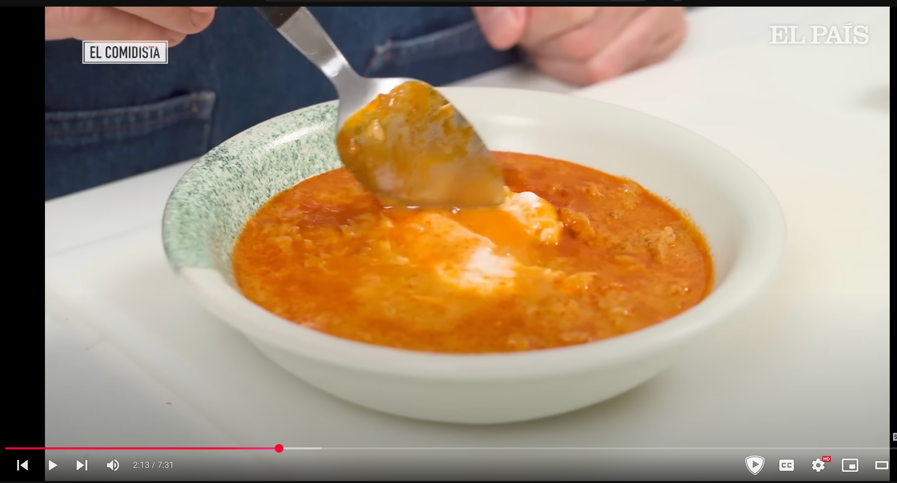

Ingredientes
Instrucciones
- Calienta aceite y dora bien los ajos.
- Añade la guindilla y dorala.
- Añade el pan picado y tuesta.
- Añade el pimenton y tuesta.
- Añade el caldo de pollo.
- Hierve 20 minutos a fuego suave.
- Añade sal y un poco de agua si está muy espeso.
- Con unas barillas, desaz un poco la sopa.
- Escalza un huevo por persona.
- Sirve la sopa con el huevo encima.